移动游戏行业相关政策推动内容精品化
2018年12月游戏版号发放恢复，2019年4月国家新闻出版署明确细化游戏审批工作的要求，新游戏版号审批倾向精品游戏，2019年有1570款游戏获审(含185个进口游戏版号)。在严审批下，也倒逼行业加速升级，生产环节从粗放式发展向精细化转变，游戏品质也有一定程度的提升。
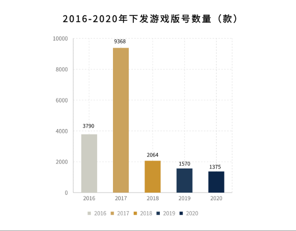
中国移动游戏行业整体保持稳定提升的发展态势，随着行业持续深耕精品化内容及版号的逐步恢复，受政策缩紧的移动游戏行业也将逐渐回暖。
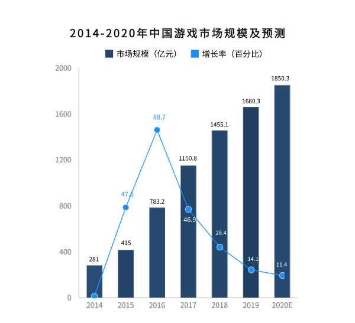
八成受访用户为玩家， 以90后、95后人群为主
玩家以90后、95后为主，游戏场景进一步拓展。数据显示，重度、中度玩家总占比达到了44.5%，在年龄分布上，以90后、95后人群为主，30岁以下人群占到五成左右。
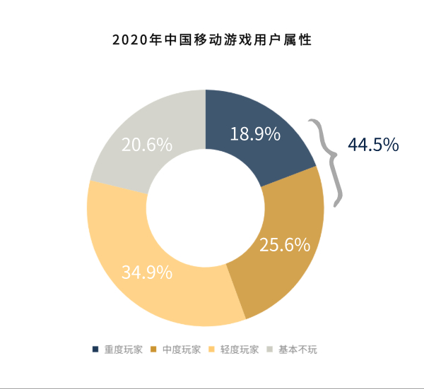
随着移动游戏加速发展，围绕游戏展开的直播、电子竞技等也成为众多年轻玩家的主要娱乐方式。
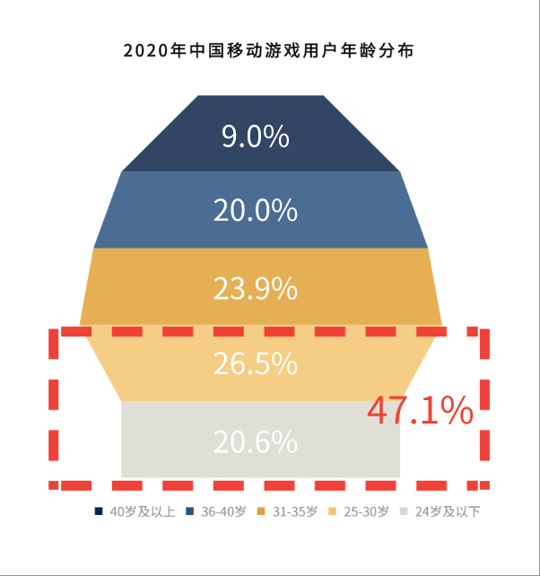
移动游戏获取渠道多元，以线上渠道为主
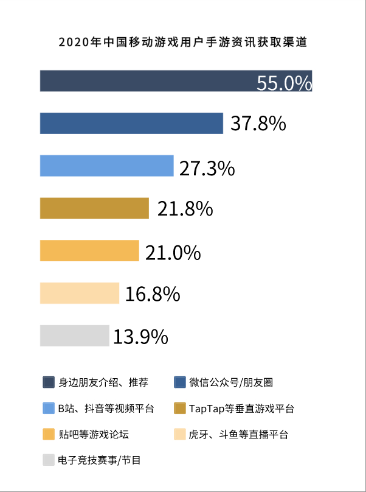
玩家关注游戏品质，重点参考游戏口碑及排名
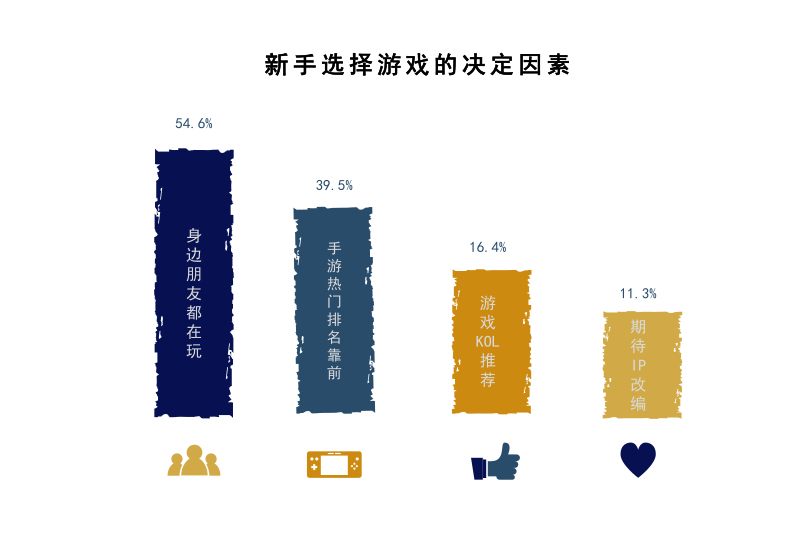
游戏画面精良成优质游戏的重要组成部分
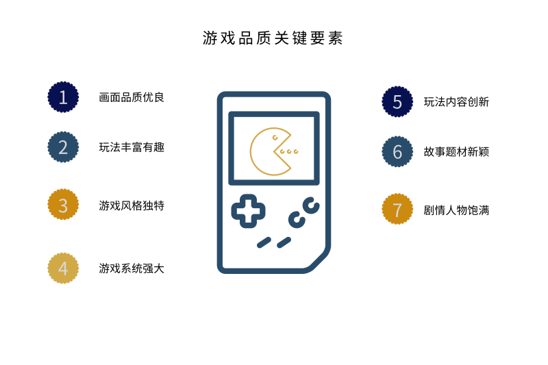
移动游戏玩家整体以轻度氪金为主
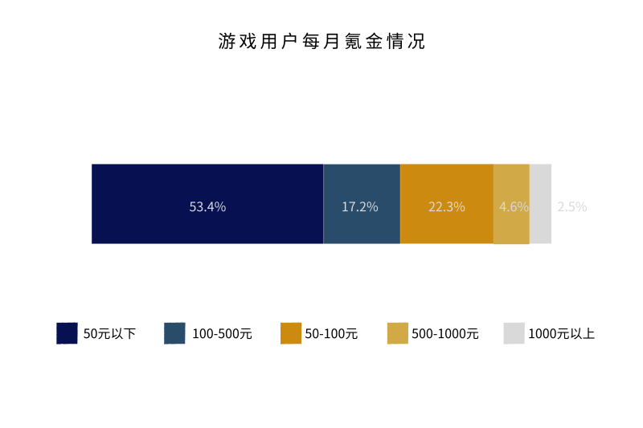
两成玩家每日观看游戏直播，并参与互动、打赏
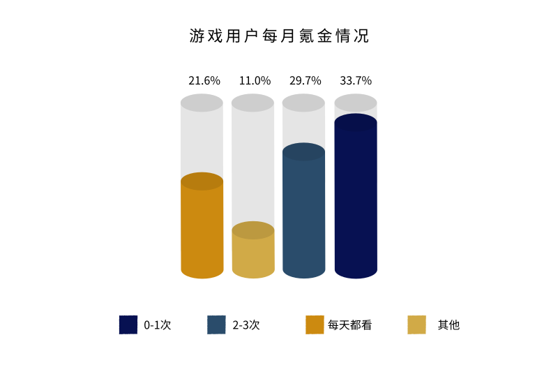
游戏直播伴随移动游戏的发展渗透，凭借社交属性、视频载体等特点受到众多游戏玩家的青睐
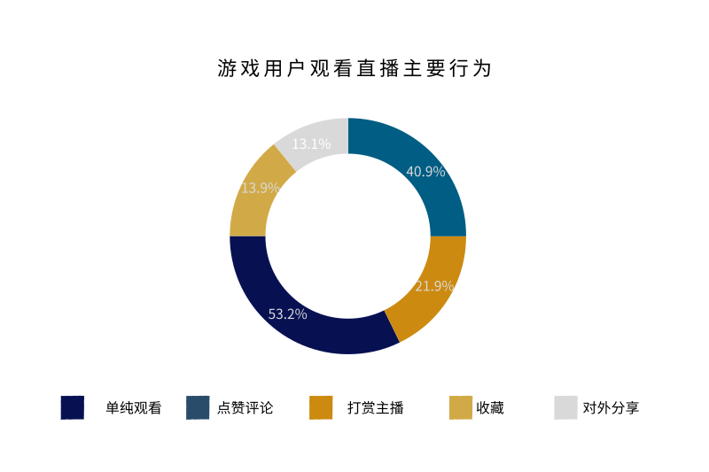
同质化问题成移动游戏行业主要发展痛点
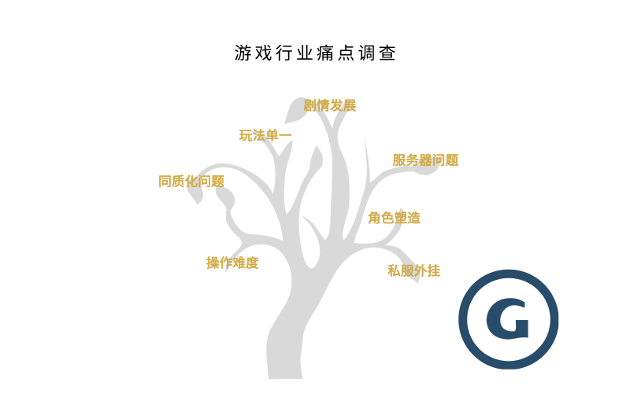
宏观调控倒逼供给侧持续创新变革供给总量控制、市场竞争激烈在一定程度上倒逼行业加速洗牌，精品化、差异化、品牌化成行业共识。
云游戏或将成行业竞争的重点战场云游戏将不仅带来游戏方式、类型、体验的升级，对整个移动游戏行业生态、行业主体变革也会起到举足轻重的推动作用。
游戏与视频、直播等业态融合发展随着游戏玩家的需求提升，游戏与视频、直播等业态日益融合发展。
创意玩法和周边衍生或成厂商竞争优势从产品本质出发，打造具有创意玩法的移动游戏或将更易脱颖而出。